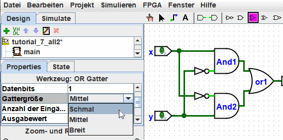
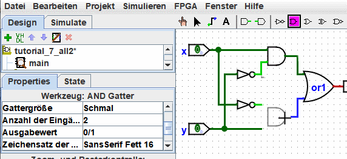

Attribute von Werkzeugen und Komponenten
Auch jedes Werkzeug zum Hinzufügen von Bauelementen zu einer Schaltung hat einen Satz von Attributen, die an die mit dem Werkzeug erstellten Bauelement weitergegeben werden. Diese Attribute der Bauelemente lassen sich später ändern, ohne die Werkzeugattribute zu beeinflussen. Wenn Sie ein Werkzeug auswählen, wird Logisim die Attribute dieses Werkzeugs in der Attribut-Tabelle anzeigen.
Nehmen wir an, Sie möchten zum Beispiel kleinere AND-Gatter erstellen. Zunächst wird das AND-Werkzeug immer große AND-Gatter erstellen. Wenn Sie aber das Attribut zur Gattergröße direkt ändern (bevor Sie das AND-Gatter in der Schaltung platzieren), dann ändern Sie das Attribut des Werkzeugs. Jedes weitere AND-Gatter, das Sie danach mit dem Werkzeug einfügen, wird die kleinere Größe aufweisen.

Jetzt können Sie die beiden existierenden AND-Gatter löschen, und stattdessen zwei neue AND-Gatter an deren Stelle einfügen. Diesmal handelt es sich um kleine Gatter. (Wenn Sie gleichzeitig noch die Anzahl der Eingänge auf 3 reduzieren, dann entfallen die vertikalen Erweiterungsstriche an den Gattern. Sie müßten dann aber auch die Schaltung neu verdrahten, weil die bisherigen Leitungen die Eingänge des Gatters nicht mehr treffen würden.)

Bei einigen Werkzeugen, spiegelt das Werkzeug-Symbol einige der Attribute wieder. Ein solches Beispiel ist das Pin-Werkzeug, dessen Symbol in die gleiche Richtung zeigt, wie dies durch das Ausrichtungs-Attribut vorgegeben ist.
Die Werkzeuge auf der Werkzeugleiste haben einen separaten Satz von Attributen zu den gleichen Werkzeugen aus dem Übersichtsfenster. Daher wird das AND-Werkzeug aus der Gatter-Bibliothek auch weiterhin breite Gatter erstellen, wenn Sie jetzt das Attribut zur Gattergröße für das AND-Werkzeug der Werkzeugleiste geändert haben.
Tatsächlich sind die Werkzeuge für Eingangs- und Ausgangs-Pins der Werkzeugleiste Instanzen des Pin-Werkzeugs aus der Basis-Bibliothek, haben aber andere Sätze von Attributen. Das Symbol des Pin-Werkzeugs wird als Kreis oder Quadrat dargestellt, abhängig vom Werkzeug-Attribut "Ausgang?".

Logisim bietet einen bequemen Tastaturbefehl zur Änderung des Ausrichtungs-Attributs, das bestimmt, in welche Richtung ein Bauelement zeigt. Wenn Sie eine der Pfeiltasten betätigen, nachdem Sie das entsprechende Werkzeug ausgewählt haben, ändert sich direkt die Ausrichtung des Bauelements.
Weiter: Leitfaden für Benutzer von Logisim.